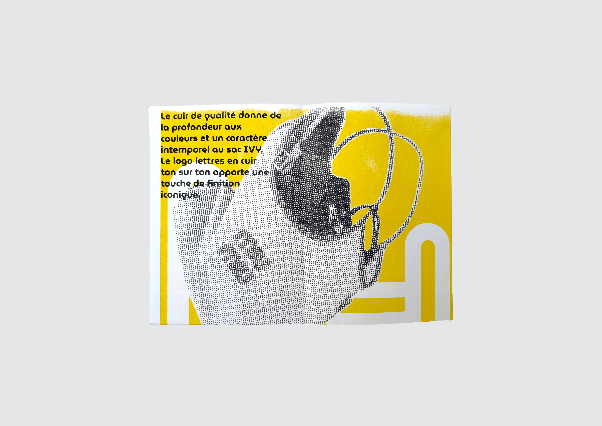
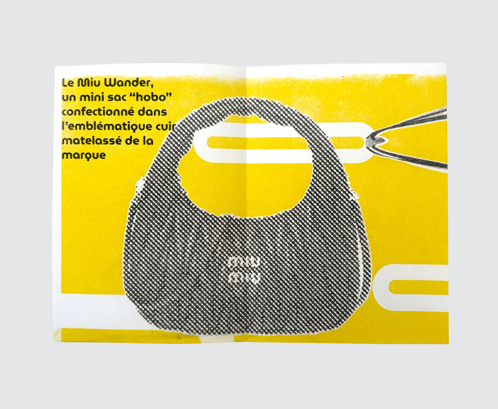

Miumiu en riso
Fanzine - affiche



Le projet fanzine sur la marque Miumiu, à été conçu pour expérimenter la technique de la risographie. Affiche se transformant en fanzine, en rendant hommage et en informant sur Miumiu.